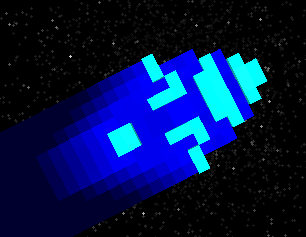
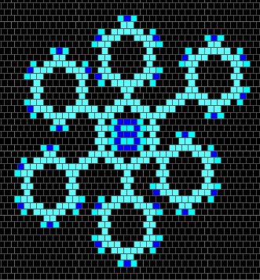

LifeViewer is a scriptable pattern viewer featuring:

You may find it convenient to bind LifeViewer to a Keyboard action in Golly. This can be done as follows:
A Javascript/HTML5 version of LifeViewer is used on the conwaylife.com forums to display posted patterns and also on LifeWiki.
| Key combination | Action |
|---|---|
| Playback controls | |
| Return | Toggle play / pause. |
| Space | Pause / next generation. |
| Tab | Pause / next step. |
| Esc | Close LifeViewer. |
| R | Reset to generation 0. Reset at generation 0 also resets camera. |
| Shift R | Toggle hard reset mode. |
| - | Decrease generation speed. |
| + | Increase generation speed. |
| Shift - | Minimum generation speed. |
| Shift + | Maximum generation speed. |
| D | Decrease generations per step. |
| E | Increase generations per step. |
| Shift D | Minimum generations per step. |
| Shift E | Maximum generations per step. |
| 0 | Reset step size and generation speed. |
| Camera controls | |
| F | Fit pattern to display. |
| Shift F | Toggle AUTOFIT. |
| Shift H | Toggle HISTORYFIT mode. |
| [ | Zoom out. |
| ] | Zoom in. |
| Shift [ | Halve zoom. |
| Shift ] | Double zoom. |
| 1 | 1x zoom. |
| 2 | 2x zoom. |
| 4 | 4x zoom. |
| 8 | 8x zoom. |
| 6 | 16x zoom. |
| 3 | 32x zoom. |
| Shift 1 | Nearest integer zoom. |
| Shift 2 | -2x zoom. |
| Shift 4 | -4x zoom. |
| Shift 8 | -8x zoom. |
| Shift 6 | -16x zoom. |
| Left | Pan left. |
| Right | Pan right. |
| Up | Pan up. |
| Down | Pan down. |
| Shift Left | Pan north west. |
| Shift Right | Pan south east. |
| Shift Up | Pan north east. |
| Shift Down | Pan south west. |
| < | Rotate left. |
| > | Rotate right. |
| Shift < | Rotate left 90 degrees. |
| Shift > | Rotate right 90 degrees. |
| 5 | Reset angle. |
| View controls | |
| Q | Increase number of layers. |
| A | Decrease number of layers. |
| P | Increase layer depth. |
| Q | Decrease layer depth. |
| C | Cycle color theme. |
| T | Toggle timing display. |
| Shift T | Toggle extended timing information. |
| Shift C | Toggle theme / Golly's standard colors. |
| / | Toggle hex grid. |
| S | Toggle stars. |
| X | Toggle grid lines. |
| Shift X | Toggle major grid lines. |
Click and drag with the mouse to pan the view.
The mouse wheel can be used to zoom in or out of the pattern. The zoom will be centered on the mouse pointer.
LifeViewer contains a script language that allows you to control playback of a pattern and how it is viewed through a dynamic camera. You can use the script language to do things like:
Script commands must be embedded in pattern comments which means that you can add them to any pattern file and other pattern readers will happily ignore them. They should be enclosed in [[ and ]]. All commands must be surrounded by whitespace. Multiple script sections are allowed.
The pattern below contains script commands that mean when LifeViewer is started the pattern will be displayed at zoom 9.5 with a camera angle of 30 degrees. The pattern will automatically start running and then stop at generation 100.
#C [[ ZOOM 9.5 ANGLE 30 ]] #C [[ AUTOSTART STOP 100 ]] x = 3, y = 3, rule = Life ooo$ bbo$ bo!To see this in action:
There are many script commands available and they are grouped by function in the table below.
| Command | Arguments | Action |
|---|---|---|
| Script commands | ||
| [[ | Start script section. | |
| ]] | End script section. | |
| Playback commands | ||
| AUTOSTART | Start play automatically. | |
| GPS | <1..60> | Set steps per second. |
| LOOP | <1..> | Loop at specified generation. |
| HARDRESET | Reset always resets camera. | |
| STEP | <1..50> | Set generations per step. |
| STOP | <1..> | Stop at specified generation. |
| Camera commands | ||
| ANGLE | <0.0..359.9> | Set camera angle. |
| AUTOFIT | Fit pattern to display. | |
| HISTORYFIT | Modify AUTOFIT to use pattern history. | |
| TRACK | X Y | Camera moves at (X, Y) cells/generation. |
| TRACKBOX | E S W N | Camera tracks bounding box with E, S, W and N edges moving at defined cells/generation. |
| TRACKLOOP | P X Y | Camera moves at (X, Y) cells/generation and playback loops at generation P. |
| X | <-4096.0..4096.0> | Set camera pan in X direction. |
| Y | <-4096.0..4096.0> | Set camera pan in Y direction. |
| ZOOM or Z | <-16.0..32.0> | Set camera zoom. Negative zooms can also be specified as decimals or fractions: ZOOM -4 = ZOOM 0.25 = ZOOM 1/4. |
| View commands | ||
| DEPTH | <0.0..1.0> | Set layer depth. |
| EXTENDEDTIMING | Show extended timing information when displayed. | |
| GRID | Display grid lines. | |
| GRIDMAJOR | <0..16> | Set major grid line interval (0 = off). |
| HEXDISPLAY | Force hex grid display. | |
| LAYERS | <1..10> | Set number of layers. |
| SQUAREDISPLAY | Force square grid display. | |
| STARS | Display stars. | |
| SHOWTIMING | Show timing information. | |
| THEME | <0..9> | Set color theme. |
There are several different ways you can have LifeViewer automatically move the camera to track patterns as they evolve.
Below is an example a using TRACKLOOP to track a glider.
#C [[ TRACKLOOP 4 1/4 -1/4 ]] #C [[ THEME 6 GRID ]] #C [[ GPS 8 AUTOSTART ]] x = 3, y = 3, rule = Life ooo$ bbo$ bo!
The TRACKLOOP period is set to 4 since the glider is a period 4 spaceship (i.e. it repeats every 4 generations). The glider takes those 4 generations to move 1 step right and 1 step up. This means it's moving at 1/4 steps per generation in the X direction and -1/4 steps per generation in the Y direction.
THEME 6 is used since it doesn't contain cell history which would be lost every time the pattern loops.
The grid lines are turned on with GRID command.
The playback speed is set to 8 generations per second.
Finally AUTOSTART is used so the pattern begins playback as soon as LifeViewer is started.
To see this in action:
Color themes are used to provide a visual representation of cell history and longevity. This works automatically on any two state pattern. Each color theme has five different colors that are used for drawing cells.
| Name | Description | Default |
|---|---|---|
| born | cell just born | |
| alive | cell alive for at least 63 generations | |
| died | cell just died | |
| dead | cell dead for at least 63 generations | |
| unoccupied | cell never occupied |
New cells are drawn in the born color.
If cells stay alive they fade from the born color to the alive color over the next 63 generations. If cells stay alive after that they remain in the alive color. This provides a visual representation of cell longevity.
| Born | Alive | ||||||||||||||
|---|---|---|---|---|---|---|---|---|---|---|---|---|---|---|---|
Cells are drawn in the died color when then they die.
If they stay dead they fade from the died color to the dead color over the next 63 generations. If cells stay dead after that they remain in the dead color. This provides a visual representation of cell history.
| Died | Dead | ||||||||||||||
|---|---|---|---|---|---|---|---|---|---|---|---|---|---|---|---|
Cells that have never been occupied are drawn in the unoccupied color. This is used for showing where cells have never lived.
In the example below you can see a glider leaving a history trail behind it. Top left is a still life block which is in the alive color because it has been alive for at least 63 generations. Bottom right is an oscillator (blinker) which has the center cell in the alive color since it doesn't change, the north and south cells in the born color since they've just been born and the east and west cells in the died color since they both just died.
There are 10 built in color themes which are shown in the table below. A two state pattern will default to using THEME 1 unless you specify an alternative with the THEME script command. You can dynamically cycle between the themes with key C. Shift and C toggles between the current theme and Golly's default colors for the pattern.
| Theme | Born | Alive | Died | Dead | Unoccupied |
|---|---|---|---|---|---|
| 0 | |||||
| 1 | |||||
| 2 | |||||
| 3 | |||||
| 4 | |||||
| 5 | |||||
| 6 | |||||
| 7 | |||||
| 8 | |||||
| 9 |
Themes 0 and 6 are good for TRACKLOOP since they have no history.
Theme 8 uses the same color for live cells and cells that died so is used to show a map of where cells have ever lived.
Cell history and longevity can be represented with colors using themes and also with layers. You define the number of layers from 1 (the default) to 10 and also the depth from 0 to 1. The bigger the depth the more distance between the layers and the more the 3D effect is exaggerated.
The number of layers is defined with the LAYERS script command and changed dynamically with keys Q (increase layers) and A (decrease layers).
The layer depth is defined with the DEPTH script command and changed dynamically with keys P (depth up) and L (depth down).
All cells are drawn in the bottom layer (layer 1). As you go up through the layers cells have to be dead for less generations or alive for more generations to be drawn. You will see towers grow up towards you where cells are alive and static (like the block) and cells tumble away from you as cells die (like the trail of the glider).

Patterns using a hexagonal neighborhood will be automatically displayed using a hex grid.

You can switch between hex and square grids at any time with the / key.
If your pattern uses a custom rule and is not automatically recognized correctly as hex (or square) then you can specify the grid type you want to use by adding the HEXDISPLAY or SQUAREDISPLAY script command to the pattern comments.